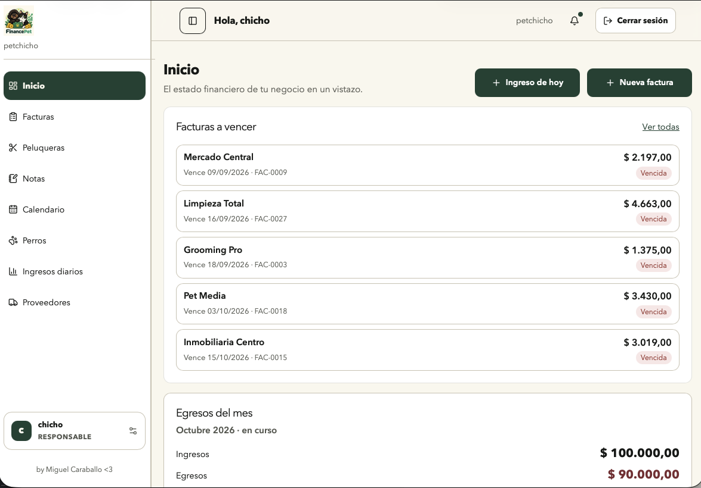
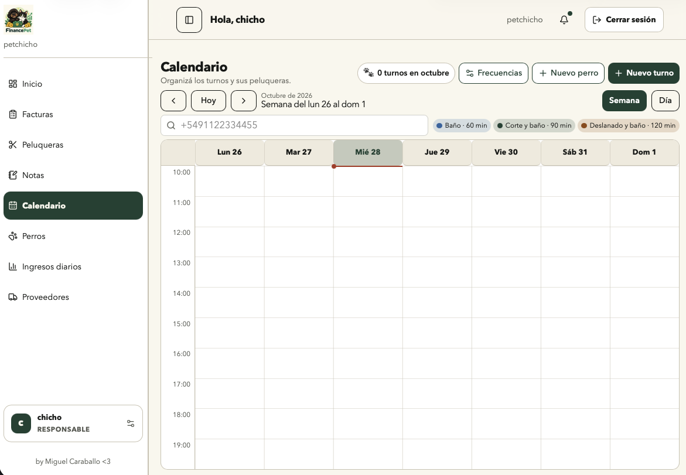

En producción · Proyecto propio
FinancePet
Turnos, facturación, pagos y stock. Un sistema que una veterinaria usa todos los días; lo diseño, desarrollo y mantengo.
- Python
- FastAPI
- React
- PostgreSQL
Consultar proyecto
Ver capturasCerrar capturas

Inicio
CalendarioSiguiente paso: Pichicho, un SaaS para peluquerías caninas con su primer cliente externo activo.